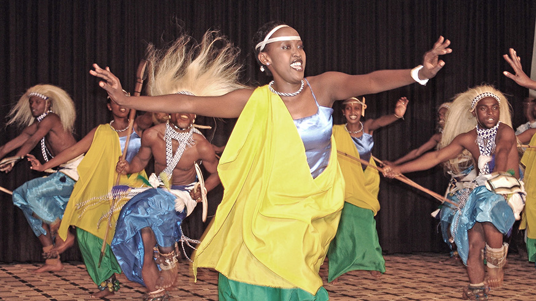
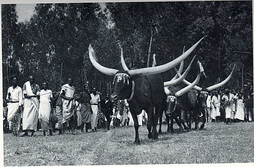
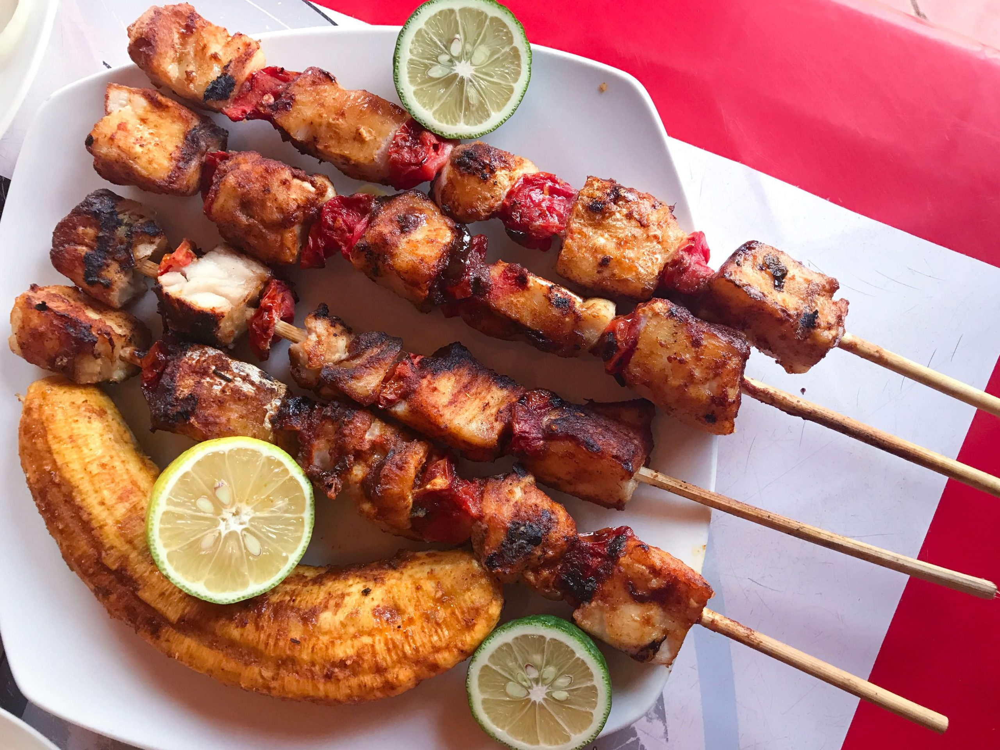
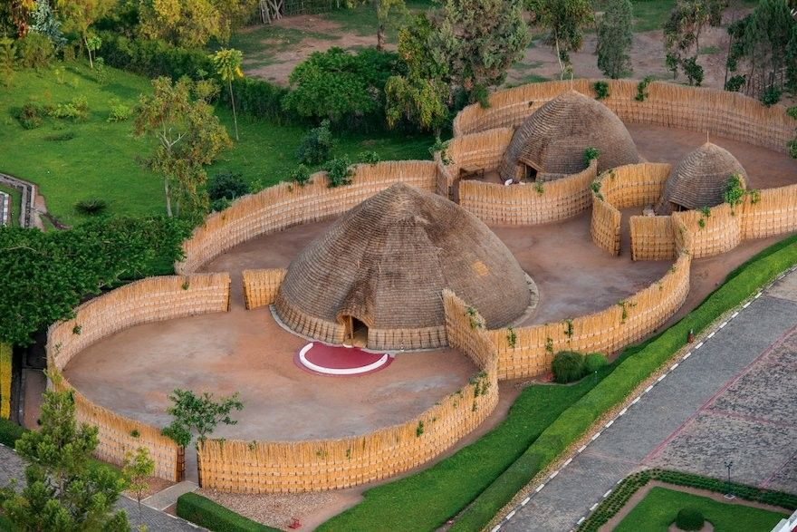

Rwanda's national dance is the Intore dance, also known as the "Dance of the Heroes." It is a traditional performance that dates back to the royal courts of Rwanda, where it was originally performed for kings and dignitaries. The dance is characterized by graceful movements, energetic jumps, and rhythmic drumming, symbolizing bravery, strength, and unity.

Inyambo cows are a special breed of long-horned cattle in Rwanda, known for their majestic appearance and cultural significance. These cows, a subset of the Ankole breed, were historically bred for royal ceremonies and were considered symbols of power, prestige, and tradition

Brochette is a beloved Rwandan dish consisting of grilled meat skewers, often made with goat, beef, chicken, or pork. It is considered Rwanda’s national dish and is commonly served with potatoes, deep-fried bananas, fresh salad, and sauce
The King's Palace Museum in Nyanza, Rwanda is a fascinating historical site that offers a glimpse into Rwanda’s royal past. The palace is a reconstruction of the traditional royal residence, designed in the shape of a beehive, reflecting the architectural style of Rwanda’s monarchy. Historically, Nyanza was the heart of Rwanda’s kingdom, serving as the seat of power for Rwandan kings. The palace features long-horned Inyambo cattle, which were once part of royal ceremonies and are still carefully tended today. Visitors can also explore the modern palace, built in 1932 for King Mutara III Rudahigwa, which houses exhibits detailing Rwanda’s monarchy and colonial history.

Want to know more? Click on 'More history', at the far end of the top right of the navigation bar, then click on the available youtube video.